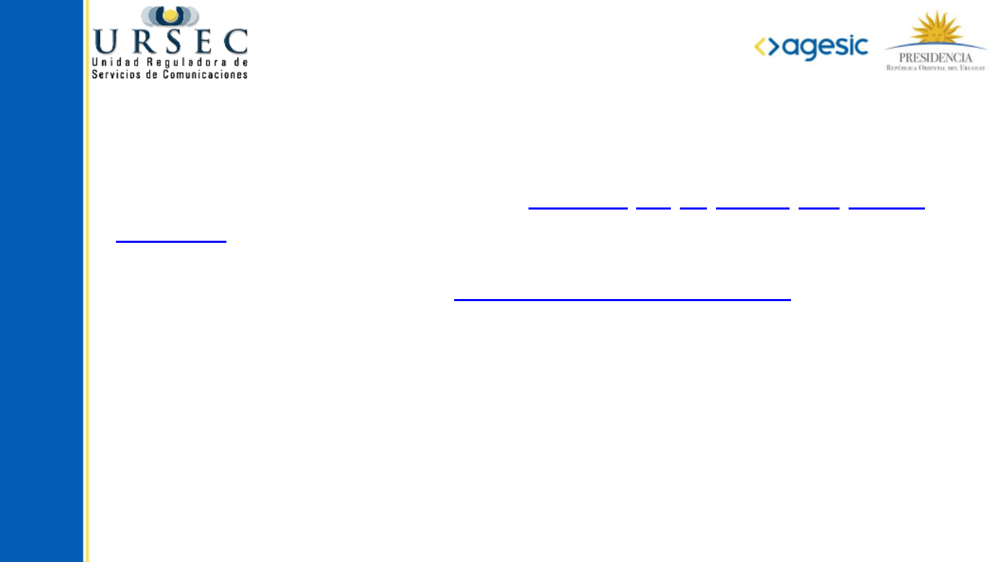
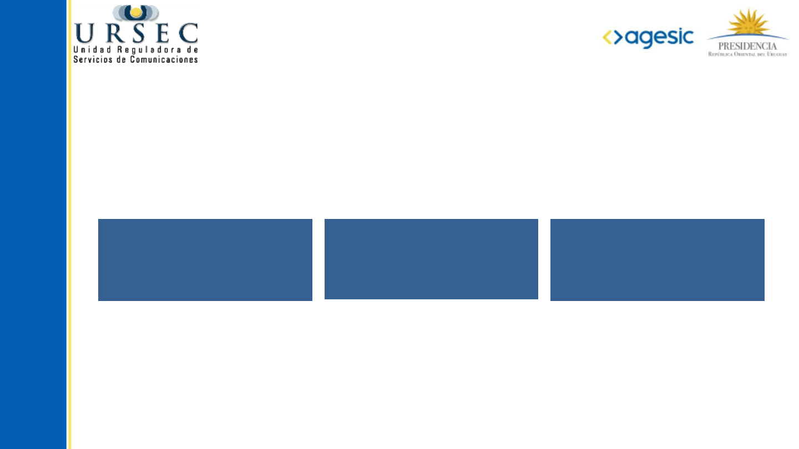

Trámite: Registro
Personas y Empresas

¿En qué consiste este trámite?
• Es el registro único de “Personas físicas y jurídicas” que se relacionan con
URSEC.
• Permite registrar los datos de las “Personas físicas y jurídicas” así como a sus:
– representantes y/o apoderados
– administradores de usuarios de trámites en línea
– usuarios de notificaciones electrónicas.
• El ALTA se realiza por única vez y habilita a realizar todos los trámites con
URSEC, en línea.
• Mantener actualizado este registro es responsabilidad del titular, y lo podrá
hacer a través del trámite MODIFICACIÓN.
• Estos trámites se realizan únicamente en línea.
¿Por qué es importante? (beneficios)
• Comodidad, al poder realizar todos los trámites ante URSEC sin
trasladarse, las 24 horas del día y desde cualquier lugar.
• Recibir las notificaciones y comunicaciones en el domicilio
electrónico sin necesidad de concurrir a URSEC.
• La comunicación de que hay una notificación en el domicilio
electrónico la reciben todas las personas que se hayan ingresado
como usuarios de notificaciones electrónicas en sus correos
personales.
• Permite administrar distintos usuarios.

❮
❯
¿Qué necesito para poder iniciar este trámite?
Paso 1 - Auto registrarse como Usuarios del Portal del Estado Uruguayo
- Sistema de Clave Única (SCU). Registro en el Portal del Estado
Uruguayo.
Paso 2 - Completar el trámite Registro de Usuario de URSEC
Quienes tienen que realizar el Paso 1) y 2)
• Titulares (personas físicas)
• Representantes y/o apoderados
• Administradores de usuarios de trámites en línea
• Usuarios de notificaciones electrónicas.

¿A qué tipo de Persona o Empresa pertenece?
Antes de iniciar el trámite, debe identificar a cual de estos
perfiles pertenece Usted:
Dispone de distintos instructivo según el tipo de persona o
empresa de que se trate.
Persona física (con doc.
de identidad)
(con RUT)
Personas jurídicas,
Entidades Públicas y
otros
❮